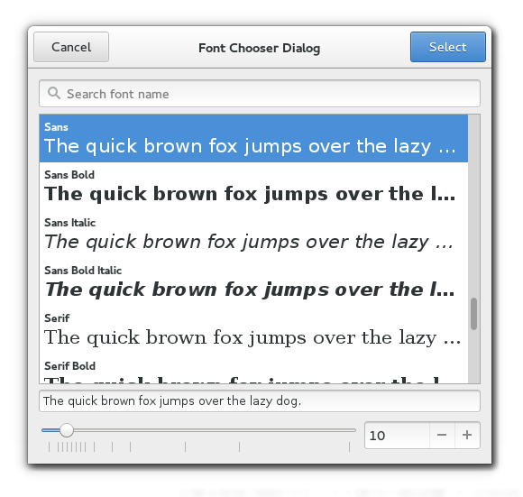

Gtk.FontChooserDialog
Example
Methods
| Inherited: | Gtk.Dialog (14), Gtk.Window (117), Gtk.Bin (1), Gtk.Container (27), Gtk.Widget (256), GObject.Object (33), Gtk.Buildable (10), Gtk.FontChooser (12) |
|---|
| static | new(title, parent) |
Virtual Methods
| Inherited: | Gtk.Dialog (2), Gtk.Window (5), Gtk.Container (10), Gtk.Widget (82), GObject.Object (7), Gtk.Buildable (10), Gtk.FontChooser (5) |
|---|
Properties
| Inherited: | Gtk.Dialog (1), Gtk.Window (33), Gtk.Container (3), Gtk.Widget (38), Gtk.FontChooser (4) |
|---|
Style Properties
| Inherited: | Gtk.Dialog (4), Gtk.Window (2), Gtk.Widget (17) |
|---|
Signals
| Inherited: | Gtk.Dialog (2), Gtk.Window (5), Gtk.Container (4), Gtk.Widget (69), GObject.Object (1), Gtk.FontChooser (1) |
|---|
Fields
| Inherited: | Gtk.Dialog (1), Gtk.Window (1), Gtk.Bin (1), Gtk.Container (1), Gtk.Widget (1), GObject.InitiallyUnowned (3), GObject.Object (3) |
|---|
| Name | Type | Access | Description |
|---|---|---|---|
| parent_instance | Gtk.Dialog | r |
Class Details
- class Gtk.FontChooserDialog(title=None, parent=None, flags=0, buttons=None, _buttons_property=None, **kwds)
Bases: Gtk.Dialog, Gtk.FontChooser
The Gtk.FontChooserDialog widget is a dialog for selecting a font. It implements the Gtk.FontChooser interface.
# Gtk.FontChooserDialog as Gtk.Buildable
The Gtk.FontChooserDialog implementation of the Gtk.Buildable interface exposes the buttons with the names “select_button” and “cancel_button”.
- static new(title, parent)
Parameters: Returns: a new Gtk.FontChooserDialog
Return type: Creates a new Gtk.FontChooserDialog.
New in version 3.2.